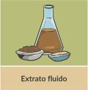

Os derivados/preparações vegetais são obtidos pela extração com solventes específicos a partir das drogas vegetais. Derivados/preparações vegetais podem ser a forma farmacêutica final ou IFAV para a produção de cápsulas, comprimidos ou drágeas, ou incorporação em formas farmacêuticas líquidas (xarope, solução) ou semissólidas (creme, gel).